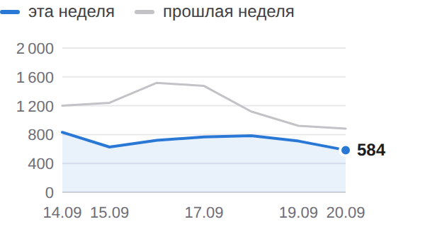
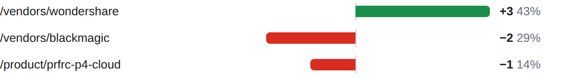
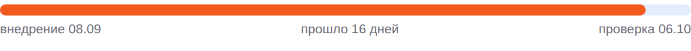

BIZSoft Growth Intelligence Daily Search, Demand & Experiment Control · 24.09.2026
Яндекс по 20.09 · Google по 21.09 · Метрика по 23.09 · спрос 20.09 | | × | ПОИСК — снижение | | | ✓ | ДАННЫЕ — сверено | | | ✓ | ТЕХНИКА — GREEN · 96 | | | · | ОТ ВАС — 2 предложения | |
| От вас: срочного нет, на вашем столе 2 предложения • эксперименты: ближайшее предложение решения — 06.10 (MONEY-A2); варианты и вероятный исход — в «Контроле эксперимента» • рост без бюджета: 3 кластера с показами без переходов (оплатить бокс, runway standard оплата из россии, runway оплата ежемесячно из россии) ждут переписанных сниппетов — «Где ближе всего рост» Развёрнутые постановки задач — в разделе «Управленческие воздействия» внизу письма; решения принимаете вы, система без команды ничего не меняет. |
| Показатели Видимость в Яндексе 5 024 показов за неделю ▼ −3334 −39,9%  По дням: эта неделя 5 024, прошлая 8 358. На первой странице 966 из 1300 запросов выборки. CTR 0,58% по всему сайту. 14.09–20.09 · Яндекс.Вебмастер, весь сайт, дневные ряды · достоверность: достаточная |
Видимость в Google 19 показов за неделю ▼ −34 −64,2% За окно переходов из Google нет; в прошлом окне 1. 15.09–21.09 · Google Search Console, весь сайт, дневные ряды · достоверность: низкая, малые числа |
Органический трафик 14 визитов за неделю ▼ −15 Визиты из поиска: весь сайт, все поисковые системы. 17.09–23.09 · Яндекс.Метрика, весь сайт, дневные ряды · достоверность: низкая, малые числа |
Обращения 0 заявок за сутки Заявки воронки сайта: компания, состав запроса и канал каждой — в блоке «Заявки за сутки». 23.09 · воронка сайта (Directus) · достоверность: полный подсчёт, малые числа |
| Сигналы дня Показы в Google за неделю 53 → 19 (−34)Страницы сайта стали показываться реже. достоверность: достаточная Страницы в поиске Яндекса 405 → 663 (+258)В поиске стало больше страниц сайта. достоверность: достаточная Запросы выборки на первой странице 1 090 → 966 (−124)Внутри выборки стало меньше запросов на первой странице. достоверность: достаточная | Заявки за сутки канал определяется по визитам Метрики (ym:s:clientID); при отсутствии визитов — по метке источника в браузере, и тогда выдача поисковика неотличима от его сервисов За сутки заявок не поступило; за 7 дней — 2 заявки. | Реклама — Яндекс.Директ расход в деньгах кабинета (без НДС); заявки — цели Метрики (отправка заявки, скачивание КП), контакты — клики по телефону/почте и мессенджер; с CRM не сверяется Кампания Директа, данные за 23.09: за день 1727 ₽, за 7 дней 6471 из 4 098 ₽ недельного лимита, с запуска 22504 ₽ (27 дн.). Claude — 0 ₽, 0 кликов, заявок 0 · идёт набор статистики (2173 из 3000 ₽ до порога) Claude Code — 0 ₽, 0 кликов, заявок 0 · идёт набор статистики (1335 из 3000 ₽ до порога) Midjourney — 0 ₽, 0 кликов, заявок 0 · 960 ₽ без заявок и контактов — выше допустимой цены заявки 600 ₽, кандидат на паузу, решение за вами ChatGPT Business — 0 ₽, 0 кликов, заявок 0 · идёт набор статистики (1088 из 2500 ₽ до порога) Cursor — 0 ₽, 0 кликов, заявок 0 · идёт набор статистики (1035 из 3000 ₽ до порога) Adobe — 41 ₽, 4 клика, CPC 10 ₽, заявок 0 · 3616 ₽ без заявок и контактов — выше допустимой цены заявки 1500 ₽, кандидат на паузу, решение за вами Зарубежное ПО (общая) — 0 ₽, 0 кликов, заявок 0 · идёт набор статистики (522 из 2500 ₽ до порога) Atlassian — 0 ₽, 0 кликов, заявок 0 · идёт набор статистики (328 из 3000 ₽ до порога) Box и Dropbox — 0 ₽, 0 кликов, заявок 0 · мало данных (3 кл.) Descript — 0 ₽, 0 кликов, заявок 0 · мало данных (3 кл.) Прочие группы (AnyDesk, Apple Gift Card, Autodesk, Avid, Canva, Claude Enterprise, Clip Studio Paint, Cloudflare, CorelDRAW, CorelDRAW Graphics Suite, DaVinci Resolve Studio, Dropbox, ElevenLabs, Envato, Epidemic Sound, Figma Professional, Collab seat, Google, Google Workspace, HeyGen, JetBrains, Kling AI, Magnific, Maxon, Miro, Notion, OpenAI, OpenRouter, Procreate, Recraft, Rive, Runway, Shutterstock, Spine, Suno, Unity, Wondershare, Wondershare Filmora, Нейросети для бизнеса, Оплата подписок Apple из России, Подарочная карта Apple, Подарочные карты сотрудникам, Пополнить Apple ID и баланс App Store) — 1686 ₽, 124 клика, CPC 14 ₽ · группа вне списка направлений — добавить в контроль Требует решения: 398 ₽ ушло на нерелевантные запросы (54 шт.) — предлагаю добавить минусы, список в веб-отчёте | Аудитория: устройства и каналы Окна: показы 14.09–20.09 · визиты 17.09–23.09 · «Яндекс» и «Гугл» в таблице визитов — Метрика и GA4, два счётчика одного сайта: расхождение между ними — свойство измерения, а не разница трафика. Яндекс: с телефонов 71% показов; Яндекс.Метрика: больше всего визитов даёт реклама (138); GA4: больше всего визитов даёт реклама (138). Показы · Яндекс 5 024 показов за неделю ▼ −39,9% Десктоп 29% · Мобильные 71% · Планшеты 0% Яндекс.Вебмастер · к прошлой неделе −3334 |
Показы · Google нет данных Нет данных: источник отдал пустой ответ: Search Console (окно неполное, нет дней: 2026-09-17) |
Визиты · Яндекс.Метрика 211 визитов за неделю ▼ −84,7% Десктоп 67% · Мобильные 32% · Планшеты 1% Яндекс.Метрика · к прошлой неделе −1171 |
Визиты · GA4 198 сессий за неделю ▼ −69,9% Десктоп 61% · Мобильные 37% · Планшеты 2% GA4 · к прошлой неделе −459 |
Яндекс · Яндекс.Метрика | Канал | Всего | Деск. | Моб. | План. | Δ |
|---|
| Органика | 14 | 8 | 6 | 0 | — | | Реклама | 138 | 83 | 53 | 2 | −76% | | Внешние переходы | 1 | 1 | 0 | 0 | — | | Прочее | 58 | 50 | 8 | 0 | −92% | | Итого | 211 | 142 | 67 | 2 | −84,7% |
Гугл · GA4 | Канал | Всего | Деск. | Моб. | План. | Δ |
|---|
| Органика | 19 | 13 | 6 | 0 | — | | Реклама | 138 | 87 | 49 | 2 | −74% | | Внешние переходы | 1 | 1 | 0 | 0 | −97% | | Прочее | 40 | 20 | 19 | 1 | −38% | | Итого | 198 | 121 | 74 | 3 | −69,9% |
Внешние переходы привели: chatgpt.com — 1, ya.ru — 1. Класс каждого домена — каталог, площадка или форум — в подробном отчёте. | Что дало изменение Google. Изменение −1 по страницам. Прибавили: /vendors/wondershare. Потеряли: /vendors/blackmagic, /product/prfrc-p4-cloud. накопленное окно 26 дней, сдвинуто на сутки +3 /vendors/wondershare 43% изменения −2 /vendors/blackmagic 29% изменения −1 /product/prfrc-p4-cloud 14% изменения  /vendors/wondershare +3; /vendors/blackmagic −2; /product/prfrc-p4-cloud −1 Яндекс. Изменение −1463 по запросам. Потеряли: оплатить бокс. Растущих адресов выше порога значимости нет. все 1287 запросов хоста, окно 2026-09-10–2026-09-20 −125 оплатить бокс 9% изменения | Контроль эксперимента MONEY-A2 · заголовки и блок вопросов на 1 карточках Проверяем: понятнее ли описание страницы в выдаче для того, кто покупает на компанию, и чаще ли по ней переходят Запуск 08.09 · день 16 · минимум для вывода 7 дн. и 500 показов Внедрение: 1 из 1 страниц отдают новый вариант (проверка сайта 24.09). Выдача Яндекса: новый сниппет виден в выдаче у 1 из 1 страниц (замер 24.09), позиция 3 — Яндекс уже показывает новый вариант. Экспозиция: 373 показа из 261 минимальных (порог пройден, порог адаптирован под ёмкость кластера) по совпадающим запросам окон; кластер целиком — 627 показов · 0 кликов · день 16 из 7 минимальных. Старый → новый: CTR 1,37% (окно 08.08–04.09, до внедрения) → 0,32% (окно 10.09–20.09, 11 из 11 дней после) — предварительно ×0,2; позиция 6,5 → 7,4. оговорки: базовое окно фиксированное (полная выгрузка 2026-08-08–2026-09-04); текущее — скользящее, окна разной длины сравниваются по CTR, не по показам Вывод: наблюдаем — экспозиция набрана, до контрольной даты. Следующая проверка 06.10. Что дальше: Предложение решения — на контрольной точке 06.10: варианты EXPAND — тираж формулы на следующие карточки по спросу; KEEP — оставить; REVERT — откат; EXTEND — продлить; по предварительным данным вероятен REVERT или KEEP; выбор за вами.  Прошло 16 дней, проверка 06.10. |
| Где ближе всего рост оплатить бокс 227 показов по запросу за период, средняя позиция 7.89 — в первой десятке, но без переходов Потенциал: переходы при том же объёме показов — платить за них не нужно Что делаем: переписать заголовок и описание страницы под запрос решение за вами, срок не назначен · достоверность: sufficient runway standard оплата из россии 115 показов по запросу за период, средняя позиция 7.56 — в первой десятке, но без переходов Потенциал: переходы при том же объёме показов — платить за них не нужно Что делаем: переписать заголовок и описание страницы под запрос решение за вами, срок не назначен · достоверность: sufficient runway оплата ежемесячно из россии 92 показов по запросу за период, средняя позиция 8.67 — в первой десятке, но без переходов Потенциал: переходы при том же объёме показов — платить за них не нужно Что делаем: переписать заголовок и описание страницы под запрос решение за вами, срок не назначен · достоверность: sufficient | Интерес к вендорам в поиске Интерес в нашей выдаче, не рыночный спрос (его измеряет Вордстат). GitLab — 920 показов в Яндексе (лучшая позиция 2.0) Framer — 774 показа в Яндексе (лучшая позиция 4.3) Box — 700 показов в Яндексе (лучшая позиция 2.0) Проверить платным трафиком: «оплатить бокс» (227 показов, позиция 7.9) — конверсионность запросов не измерена. | Спрос и направления развития Замер спроса от 20.09, обновляется по расписанию исследования Мы видим 971 657 покупательских запросов в месяц по 182 направлениям каталога. Своя страница есть под 96% этого спроса, в поиске находится 86%, на первой странице — 78%. Без страницы остаётся 16 205 запросов в месяц — это направления, где спрос есть, а своей страницы нет. Ещё 52 137 запросов в месяц не отнесены ни к нам, ни к чужому товару: это голые фразы омонимичных брендов (box — 30 187, zoom — 10 813, bubble купить — 5 732). В спрос и в решения об ассортименте они не входят. 96% есть своя страница | 86% страница в поиске | 78% на первой странице |
Ближайшее направление: apple. Позиция хорошая, показы есть, переходов мало — 677 441 запрос в месяц. Что делаем: эксперимент со сниппетом. | Управленческие воздействия постановки задач по предложениям из шапки; система без вашей команды ничего не меняет 1. Принять решение по эксперименту MONEY-A2 Зачем: контрольная точка 06.10; предварительно ×0,2 по CTR кластера (373 показов). Что делаем: прочитать панель вердикта в письме контрольной даты (вердикт, уверенность, p-value, рекомендация с целевыми страницами) и ответить в чате командой. Приёмка: решение зафиксировано в журнале решений экспериментов. От вас: одна команда 06.10: EXPAND / KEEP / REVERT / EXTEND MONEY-A2. 2. Переписать сниппеты под 3 запроса с показами без переходов Зачем: «оплатить бокс» — 227 показов по запросу за период, средняя позиция 7.89 — в первой десятке, но без переходов; «runway standard оплата из россии» — 115 показов по запросу за период, средняя позиция 7.56 — в первой десятке, но без переходов; «runway оплата ежемесячно из россии» — 92 показов по запросу за период, средняя позиция 8.67 — в первой десятке, но без переходов. Что делаем: для каждого запроса: переписать title целевой страницы под запросную формулу (≤65 символов, штатный слой src/lib/seo.ts), description ≤160 с оффером «счёт, договор, ЭДО», добавить вопрос в FAQ-блок; изменения — отдельным PR с частотностью по каждой правке, мерж ваш. Приёмка: по каждому запросу появились переходы (CTR > 0) в течение 14 дней при позиции не хуже исходной ±1. От вас: команда «делай сниппеты» — правки уходят в PR. | Техническое состояние GREEN · мобильная скорость 96 Проверено страниц: 3 — главная 96, карточка товара 96, статья 97. LCP: в норме · CLS: выше нормы Значимых изменений к прошлому замеру нет. Последняя расширенная проверка 19.09: 12 адресов, зелёных 12, жёлтых 0, красных 0. | Здоровье данных Сверено: охваты сопоставлены: KPI считаются по всему сайту Показы и клики Яндекса, показы Google, визиты Метрики и сессии GA4 считаются по всему сайту за окна равной длины. Выборка запросов используется только в разделе возможностей и на KPI не влияет. Показы и переходы Яндекса относятся к весь сайт, визиты Метрики — к весь сайт и ко всем поисковым системам сразу. Сопоставлять корректно показы с переходами одной выборки, а визиты Метрики — с сессиями GA4. Конвейер: 11 из 11 контуров отработали в срок. |
| Следующие проверки 06.10 — MONEY-A2: замер кликабельности изменённых страниц До перечисленных дат выводы не делаются: данных выдачи за более короткий срок недостаточно, чтобы отличить эффект от обычных колебаний. | | Полный отчётЖурнал работ |
|